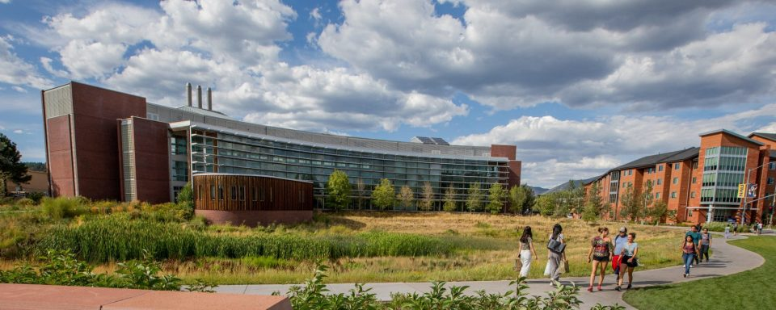

Faculty Insight
Oxford sabbatical research
A modern research landing experience designed for scientific excellence, translational health, and future-focused discovery.
PMI unites high-security lab infrastructure, data-driven biology, and multi-disciplinary expertise to create next-generation outcomes across infectious disease, immunology, and environmental microbiome science.


Institute profile
PMI is an NAU research unit built to unite scientists from multiple colleges and departments. We tackle infectious disease and microbiome challenges using computational genomics, microbiology, immunology, and public health to create research outcomes that advance science, training, and community health.
Partner with PMIResearch collaboration across departments and global partners.
Hands-on laboratory and data-driven training for students at every level.
Research outcomes that inform public health, policy, and scientific discovery.
Featured stories
Paul Keim shares details on spending the 2022-2023 academic year in Oxford, England, where he is studying infectious diseases.
Read more
Leptospira bacteria are maintained in reservoir animals and shed into the environment through urine, creating complex exposure pathways.
Read more
2022 was one of those years where it all came together. The Walker Lab submitted 14 papers for peer review, six of which are now published.
Read moreResearch spaces

Works with low-risk microbes that pose little to no threat of infection to healthy adults.

Suitable for agents that pose moderate hazards to personnel and the environment.

Works with select agents that can pose a serious public health threat.
Detects target DNA regions during early reaction phases with precision instruments.

Amplifies DNA to verify whether target regions were successfully generated in the reaction.
Location
Room 210, Building 56
1395 S Knoles Drive
Flagstaff, AZ 86011
PO Box 4073
Flagstaff, AZ 86011